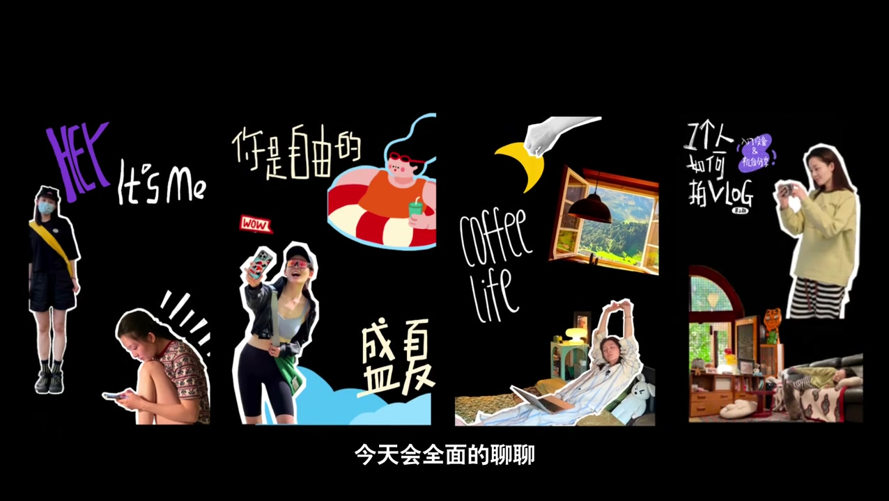
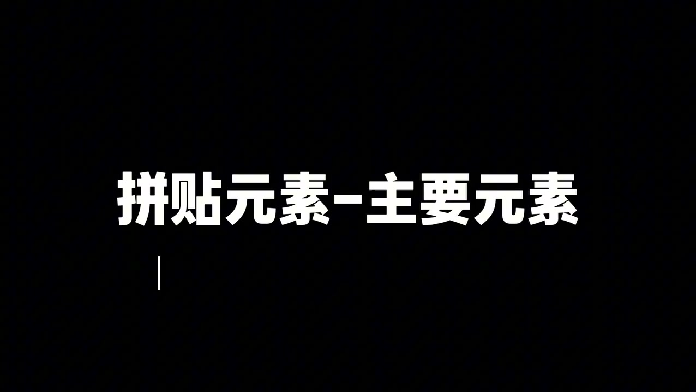
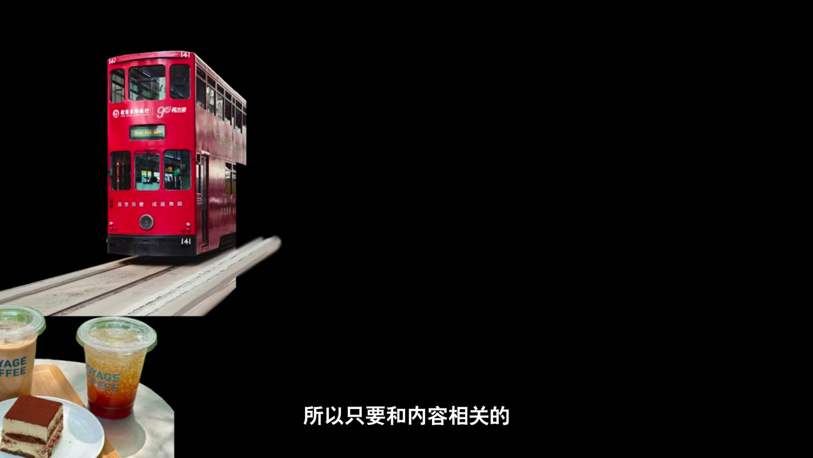

01
中文
很多朋友关注我的原因是视频封面特别有风格，眼前一亮。
EN
Many of you follow me for my video covers—so stylish, they catch the eye.
表达提示catch the eye（眼前一亮）

Scene English · 剪辑 · 视频封面设计
Making Video Covers This Good Is Illegal! (It's a Tutorial)
🎧 语音讲解
Opening: I bet many of you follow me for m…
情境封面即海报设计的态度。
很多朋友关注我的原因是视频封面特别有风格，眼前一亮。
Many of you follow me for my video covers—so stylish, they catch the eye.
表达提示catch the eye（眼前一亮）
把每个封面都当成是一次海报设计来做。
I treat every cover as a poster design.
表达提示poster design（海报设计）
尝试不同的拼贴元素，反复的排列组合，直到自己满意为止。
Trying different collage elements, rearranging again and again until satisfied.
表达提示collage elements（拼贴元素）
catch the eye（眼前一亮
poster design（海报设计

Overall structure: a complete collage cove…
情境拼贴封面三段式框架。
一个完整的拼贴封面，主要包括元素制作、排列组合、封面字体三个部分。
A complete collage cover has three parts: element making, arrangement, and cover fonts.
表达提示three parts（三个部分）
如果想要被大家记住，那就把自己作为封面上最重要的元素。
To be remembered, make yourself the cover's most important element.
表达提示the hero element（主角元素）
这一步需要考虑的是我要传递怎样的情绪。
This step is about which emotion I want to convey.
表达提示convey emotion（传递情绪）
确认好封面主角后就可以给他们选个背景元素，这一步主要是为了丰富画面。
After the hero, pick background elements to enrich the frame.
表达提示enrich the frame（丰富画面）
three parts（三个部分
the hero element（主角元素

Cutout tools: my go-to is Procreate. Inser…
情境Procreate 手绘抠图或苹果相册一键抠图。
我常用的抠图工具是Procreate，插入照片，选择手绘工具，沿着人物的边缘开始描线，直到闭合。
My go-to cutout tool is Procreate—insert the photo, pick the draw tool, trace along the edge until closed.
表达提示trace along the edge（描边）
没有强迫症的朋友可以直接使用苹果相册抠图。
Non-obsessive people can just use the Apple Photos cutout.
表达提示Apple Photos cutout（苹果抠图）
点击拷贝并粘贴，同时关掉背景图层，拼贴元素就做好了。
Copy and paste, then turn off the background layer—the element is done.
表达提示turn off the layer（关掉图层）
主要元素可以加个描边突出一下。
Add a stroke to the hero element to make it pop.
表达提示add a stroke（加描边）
trace along the edge（描边
Apple Photos cutout（苹果抠图

Arrangement: putting the elements together…
情境单一视觉重点是排列的核心。
这一步对我来说是最花时间的，既要画面丰富又要避免杂乱。
This step takes me the longest—rich but not cluttered.
表达提示avoid clutter（避免杂乱）
封面上尤且只有一个视觉重点，尽可能的放大、显眼。
One and only one visual focus, blown up large and eye-catching.
表达提示one visual focus（一个视觉重点）
其他元素只做背景和装饰。
Everything else is background and decoration.
表达提示background and decoration（背景装饰）
如果重点太多画面很平均，视觉上就会显得特别乱。
Too many focal points level the frame and it looks messy.
表达提示too many focal points（重点太多）
avoid clutter（避免杂乱
one visual focus（一个视觉重点

Cover fonts and mindset: all fonts are han…
情境手绘字体与长期审美积累。
所有的字体都是我自己手绘完成的。
All the fonts are hand-drawn by me.
表达提示hand-drawn fonts（手绘字体）
因为没有盲目的追求热门和点击率，所以才能从一而终的保持自己的风格。
Not chasing trends or clicks is why I've kept one consistent style.
表达提示keep a consistent style（保持风格）
需要大量的审美积累和练习，生活化的去学习。
It takes tons of aesthetic practice—learn in daily life.
表达提示aesthetic practice（审美练习）
hand-drawn fonts（手绘字体
aesthetic practice（审美练习
说封面主角
说抠图方法
说视觉重点
说手绘字体
多个重点画面平均，视觉会乱。
把自己抠出来加描边，才有个性。
盲目追热点会丢掉风格。
审美需要大量积累和练习。